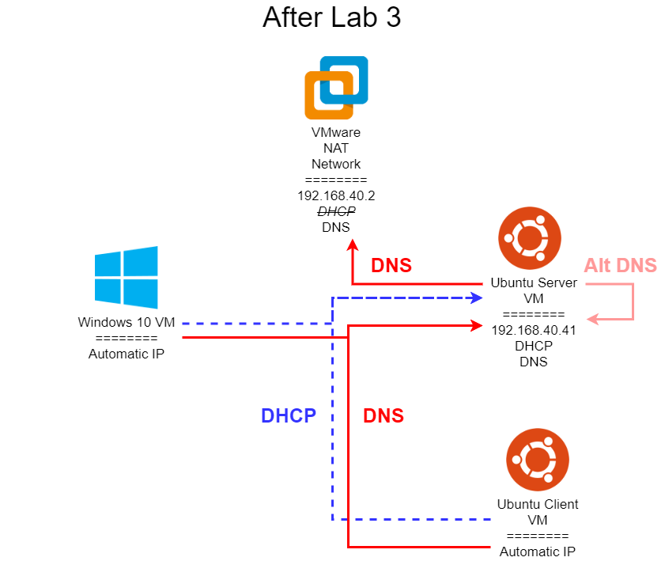

Lab 3 Networking Diagrams
Here are some helpful networking diagrams to better explain the desired state before and after the end of Lab 3. In all of these diagrams, I am using a sample network with the IP address 192.168.40.0. You will have to adapt the IPs to match your network configuration. In addition, each network address will need to be updated with your unique eID as directed in the lab assignment.
Before Lab 3
Once you’ve completed Task 1 of Lab 3, you should have three virtual machines connected to your network. Each of them will be configured to automatically get an IP address using DHCP, and they will also be configured to use the automatically provided DNS information from that DHCP server. By default, the NAT network in VMware is configured to use VMware’s built-in DHCP server to handle automatic IP addresses, and that DHCP server also configures each system to use VMware’s built-in DNS server. That server can be found at 192.168.40.2.
This is very similar to how most home networks are configured, where the wireless router acts as both a DHCP server and DNS server (in actuality, a DNS forwarder, since it doesn’t really resolve DNS entries itself).
After Lab 3

Once you’ve completed all of Lab 3, your network diagram should resemble the one shown above. At this point, you have installed and configured both a DNS and a DHCP server on your Ubuntu VM labelled Server, and disabled the built-in DHCP server in VMware’s NAT network. By doing so, your Ubuntu VM labelled Client as well as your Windows 10 VM will now be getting automatic IP addresses from your Ubuntu server. In addition, the DHCP server will configure those systems to use your Ubuntu server as the primary DNS server. So, whenever you try to access any addresses in the cis527<your eID>.cs.ksu.edu network on those systems, they will use your Ubuntu DNS server to look up the names.
However, notice that your Ubuntu VM labelled Server still uses the VMware DNS server as its primary entry. By doing so, it will not be able to look up any addresses in the cis527<your eID>.cs.ksu.edu network at this time. However, you can modify its DNS settings to include a secondary entry which points back to itself (it is important to use it’s external 192.168.40.41 IP address for this, and not the localhost address 127.0.0.1). By doing so, that will allow it to query itself for DNS entries it can’t find, but will still guarantee it can access the internet even if your internal DNS server is not configured properly.